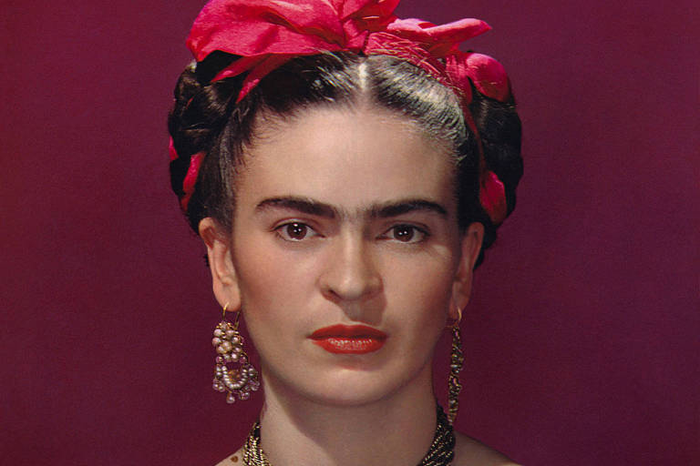
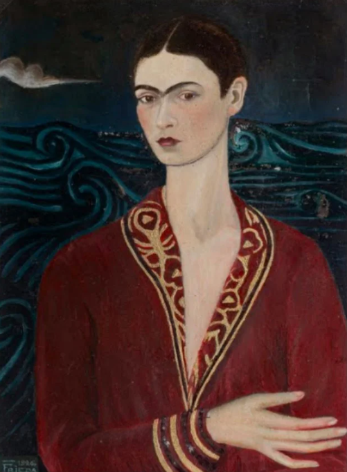
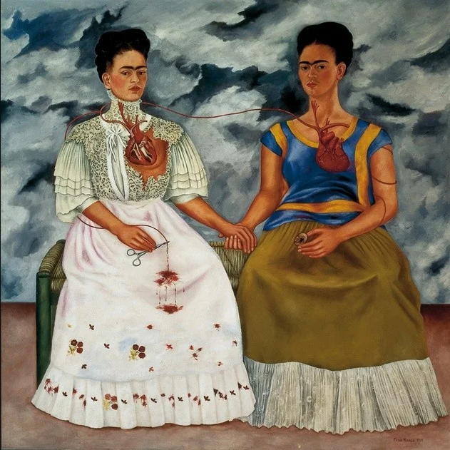
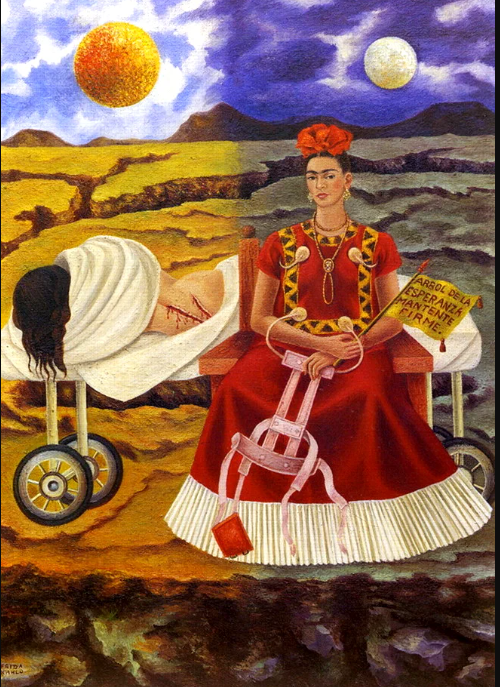
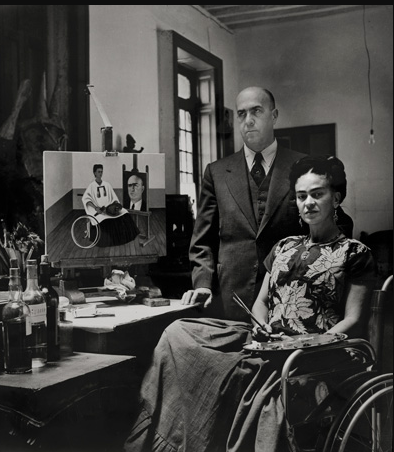
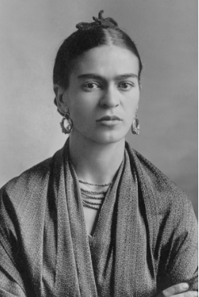
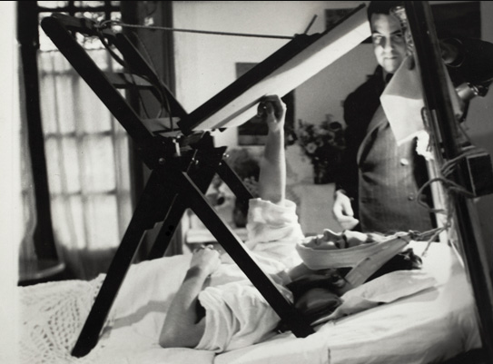

KHALO ART-GALLERY
VISIT-UP
Take a look at some of the wonderful works and photographs by mexican artist Frida Khalo!
Autoretrato Vestido de Veludo - 1936

As duas Fridas - 1939

Áravore da esperança, mantenha-se firme - 1946

Frida Khalo e Diego Rivera

Frida Khalo

Khalo pintando
